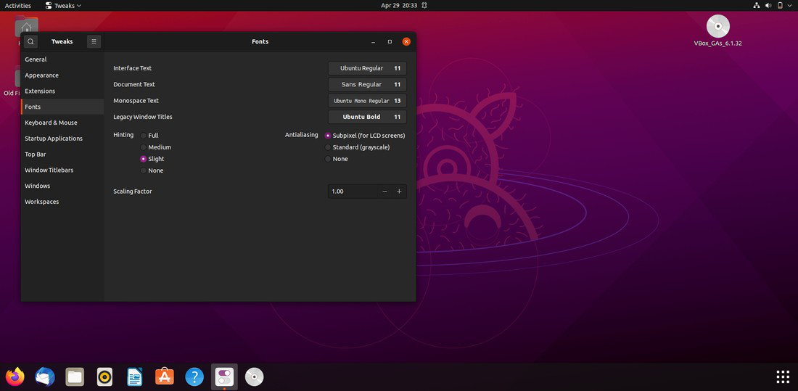
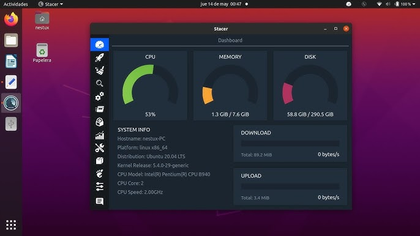
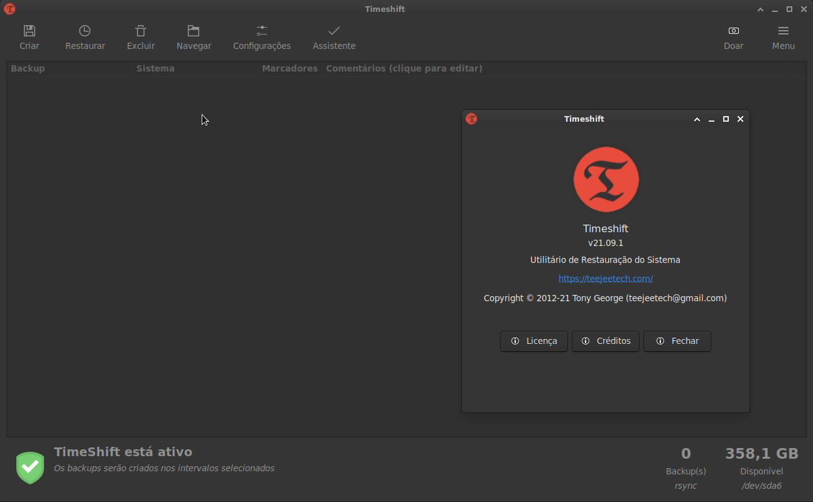

GNOME Tweaks
Para personalizar o ambiente de desktop GNOME, como temas, ícones, barras de título e outras opções visuais.
Stacer
Monitor de desempenho e ferramenta de otimização para Linux. Permite visualizar processos, serviços, memória, disco e otimizar configurações do sistema.
Timeshift
Ferramenta para criar backups e pontos de restauração do sistema facilmente.
